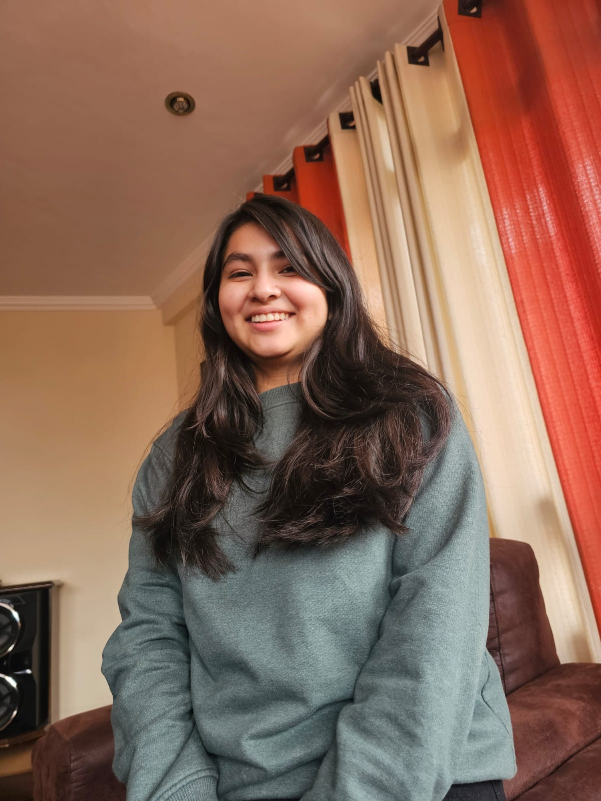

Sobre mi

Me llamo Irina Nandy Alvarez Olivera naci un 25 de abril del 2001, tengo 22 años, sali del colegio Pedro Poveda,
actualmente estoy estudiando la carrera de Ingenieria Empresarial en la Universidad Catolica Boliviana.
Soy una persona paciente, de buenos valores y activa, con 17 años de formación estudiantil y más años de formación a futuro.
Soy creativa, con iniciativa y con muchos planes y proyectos a futuro.
Me gusta ayudar a los demás sin esperar nada a cambio.
Mis habilidades
- Resolucion de problemas
- Planificacion y orientacion
- Manualidades
Mis Aptitudes
- Creatividad
- Empatia
- Disciplina
- Flexibilidad
- Iniciativa
Mis Aficiones
- Leer
- Armar rompecabezas
- Aficion al cine
- Dibujo
- Postres